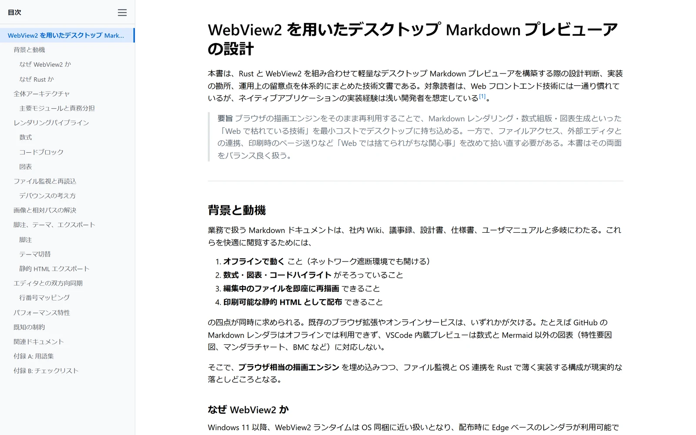
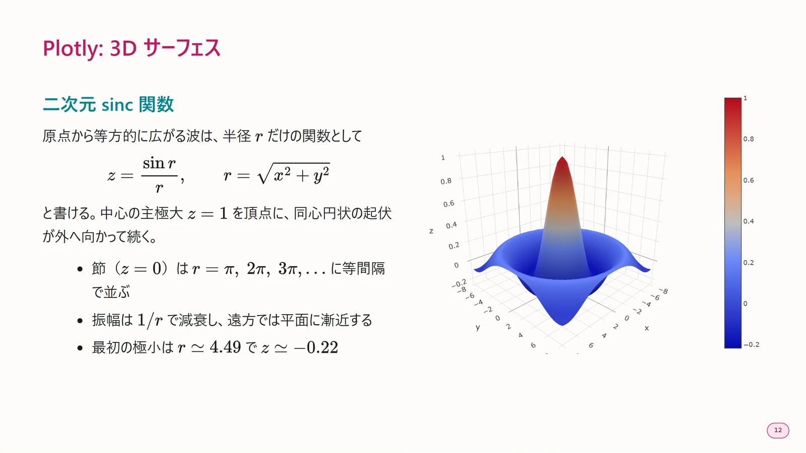
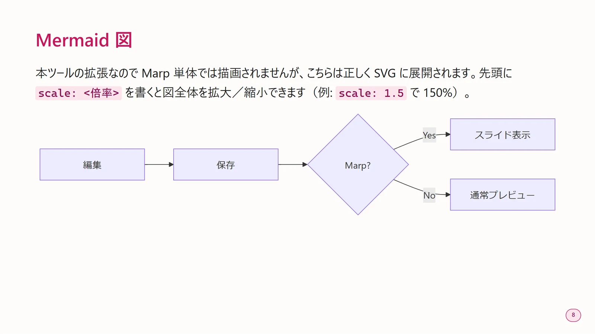
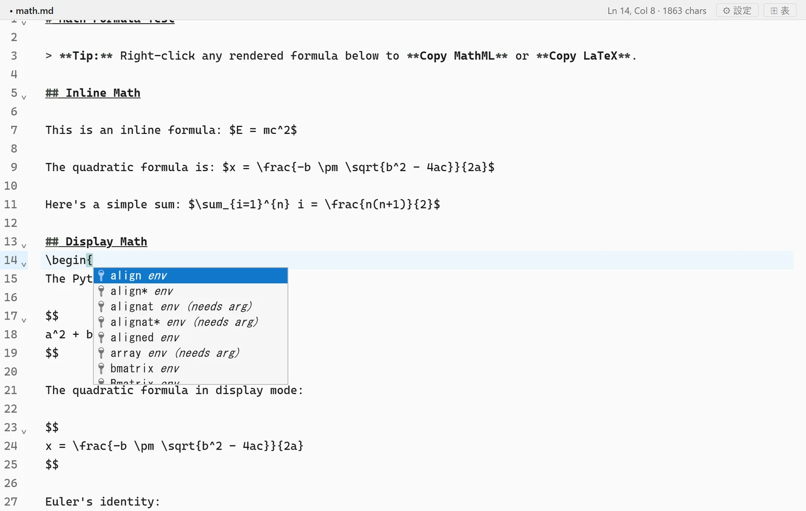
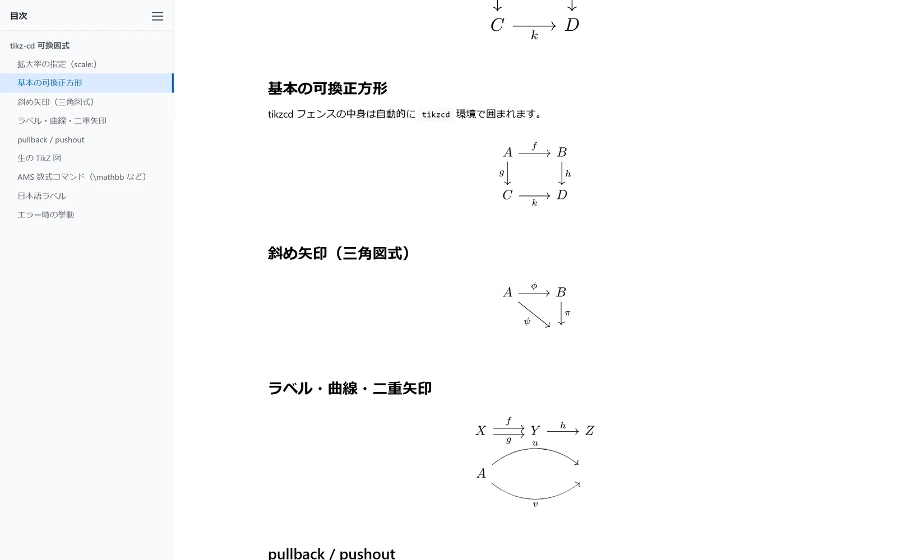
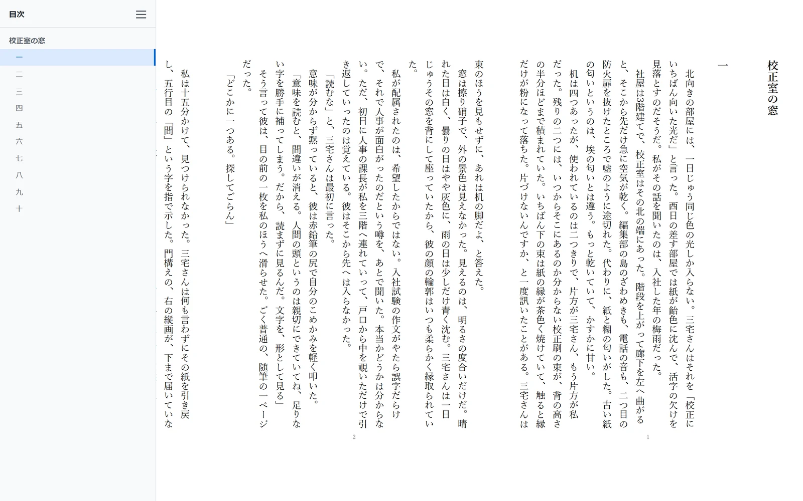
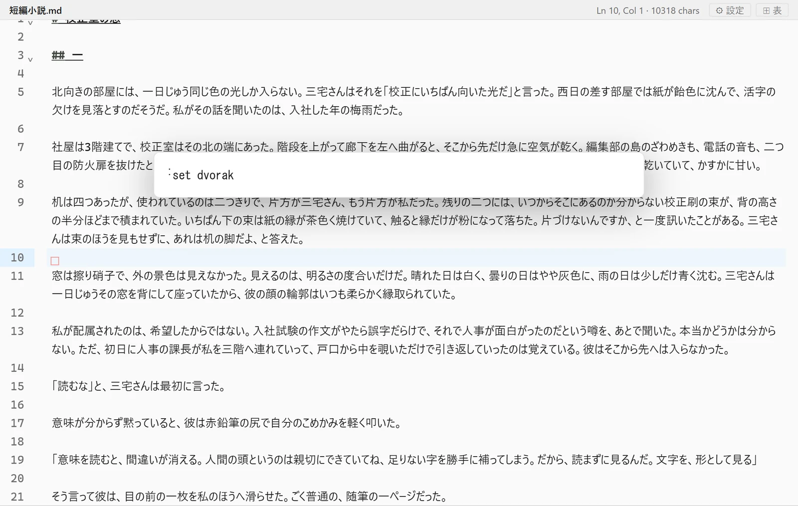

01だれでも
開いて、読むだけ。
同僚から、あるいは AI から受け取った .md を、何の準備もなく読めます。見出しから目次が自動で組まれ、外部エディタで保存すればその場で再読込。フォルダごと渡されたときは、ファイルツリー付きのワークスペースとして開きます。
- 目次サイドバー
- ファイル関連付け
- 保存を検知して再読込
- 単独 HTML / PDF 書き出し
スタンドアロン Markdown プレビューア
.md をダブルクリックするだけ。図も数式も Marp スライドも縦書きの文庫レイアウトも、インストールした直後から 完全オフラインで表示できます。
Windows 10 / 11 専用です。 macOS・Linux には対応していません。

管理者権限は要りません。ユーザー単位で入ります。
.md をダブルクリックドラッグ＆ドロップ、フォルダの右クリックでも開けます。
使い慣れたエディタで保存すると、その場で描き直します。
USE CASES
機能の数より、どう効くか。よく使われている 5 つの場面を挙げます。
01だれでも
同僚から、あるいは AI から受け取った .md を、何の準備もなく読めます。見出しから目次が自動で組まれ、外部エディタで保存すればその場で再読込。フォルダごと渡されたときは、ファイルツリー付きのワークスペースとして開きます。
02プレゼンする人へ
冒頭に marp: true と 1 行書けば、その文書はもう 16:9 のスライドです。P で「1 枚ずつ / サムネイル一覧 / 縦並び」を切り替え、Z でレーザーポインタ。下にはみ出した本文は見出しを固定したまま自動で縮み、PDF は 1 ページ 1 スライドで出ます。


03研究する人へ
KaTeX がインラインもディスプレイも組みます。数式を右クリックすれば MathML と LaTeX をコピーでき、Word にそのまま貼れます。内蔵エディタには YaTeX 風の入力支援 — $+Tab、\begin{}+Tab、a.→\alpha。可換図式は tikz-cd をそのまま書けば、WASM 版 TeX がオフラインで組みます。


04書く人へ
付属テーマ bunko.css を選ぶと、本文は 1 行 39 字 × 16 行の縦組みページに流し込まれ、ページの地にノンブルが入ります。段落は本物の本と同じようにページをまたいで割れる。字数と行数を見ながら書けて、ルビも振れます。字数・行送り・書体は歯車から動かせて、その場で組み直します。

05こだわる人へ
内蔵エディタは Vim キーバインドに対応し、w b e は漢字・ひらがな・カタカナの切れ目で止まります。そして Dvorak 配列エミュレータを使っている人のために、コマンドモードのキーだけを、押した物理キーの QWERTY 位置で解釈できます。文章の入力は Dvorak のまま。
:set dvorakdd dw gg 3j [[ のような複数キーや回数指定もそのまま。インサートモードと : / の入力は Dvorak のままです。

EVERYTHING INCLUDED
プラグインの追加も、ネットワークも要りません。すべて本体に入っています。
WHY ANOTHER ONE
編集を主役にしたツールは既にたくさんあります。これは「渡された .md を、きれいに読む」ほうに寄せた道具です。
| 観点 | MD Previewer | VS Code | Obsidian | Typora |
|---|---|---|---|---|
| 開きかた | .md をダブルクリック |
アプリ起動 → プレビューを開く | vault を開く | アプリ起動 → ファイルを開く |
| 主眼 | 閲覧（編集は E で） | エディタ | ノート編集 | WYSIWYG 編集 |
| テーマの足しかた | assets/ に CSS を 1 枚 |
設定ファイルにパスを列挙 | テーマ導入 / snippets | テーマフォルダに配置 |
| 縦書き・文庫組み | 対応 | — | — | — |
| Marp スライド | 標準搭載 | 拡張機能 | プラグイン | — |
| ライセンス | MIT / 無償 | 無償 | 個人無償 / 商用有償 | 有償 |
GET IT
インストーラは %LOCALAPPDATA% の下に入るので、管理者権限は要りません。アンインストールは Windows の「設定 → アプリ」から。